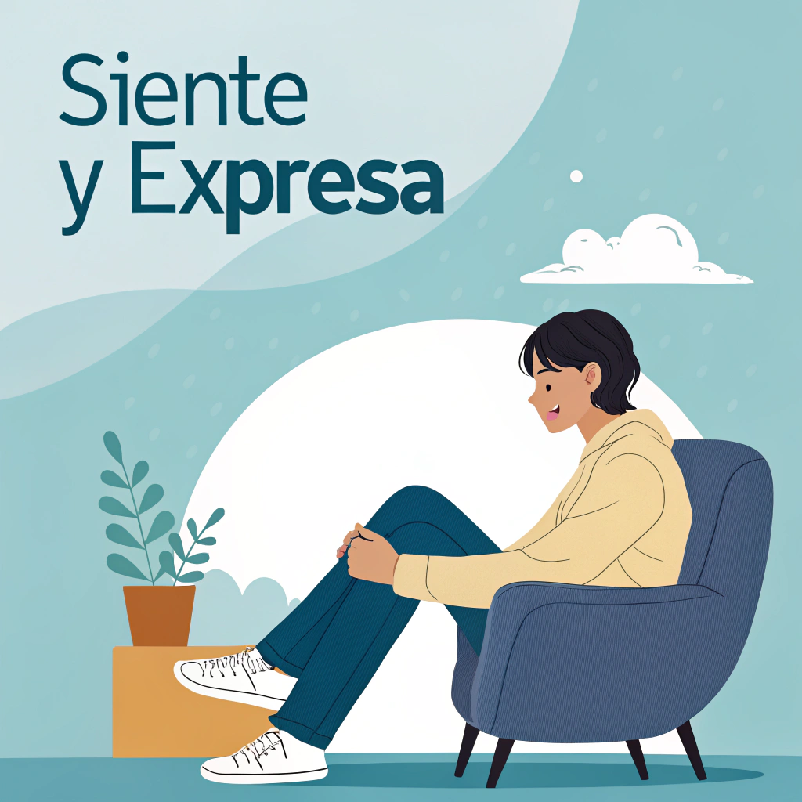

Empecemos
Empecemos


A veces sentimos muchas cosas al mismo tiempo: alegría, tristeza, enojo, miedo, confusión… y no siempre sabemos cómo manejarlas.
En esta sección vas a aprender a reconocer tus emociones, darles nombre, expresarlas sin miedo y entender que todas son válidas.
Las emociones son reacciones que sentimos frente a lo que vivimos. Algunas nos hacen sentir bien, otras incómodos, pero todas cumplen una función.
¿Cuál es la emoción que más sientes últimamente? ¿La estás expresando o guardando?
La calma llega cuando estamos en equilibrio, tranquilos y en un espacio seguro.
Es una emoción que nos ayuda a pensar con claridad.
👉 Cuídala, búscala y crea momentos que te conecten con ella.

La alegría es una emoción que aparece cuando vivimos algo que nos gusta, nos emociona o nos hace sentir bien.
Aprovecha esos momentos para recordarte que también mereces disfrutar.
👉 Guárdala en tu memoria emocional: vuelve a ella cuando tengas un día difícil.
La tristeza nos visita cuando algo nos duele o sentimos que perdimos algo importante.
No es mala, es una señal de que necesitas tiempo, cariño o apoyo.
👉 Está bien sentirte así. No te apresures a estar "bien".

El enojo aparece cuando algo nos frustra, nos molesta o sentimos que no es justo.
No está mal enojarse, lo importante es cómo lo expresas.
👉 Tu emoción es válida, pero también lo es cuidar cómo reaccionas.

El miedo aparece cuando sentimos que algo puede hacernos daño o salir mal.
Es una emoción que nos protege, pero no debe detenernos para siempre.
👉 Escúchalo… y luego decide si lo enfrentas, paso a paso.